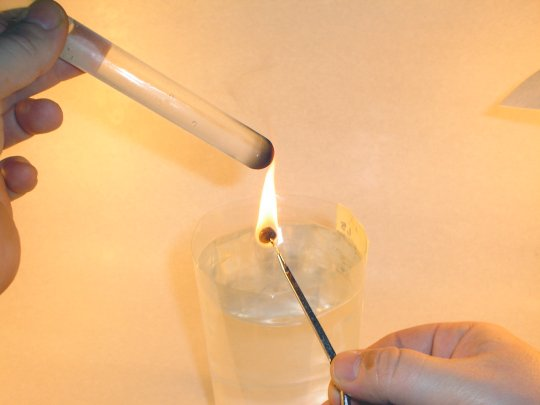
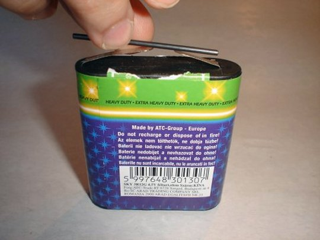

Elemente de termodinamică. |
Principiul I al termodinamicii |
 Activitatea experimentală 1-1
Activitatea experimentală 1-1
Investighează arderea unei alune. Lucrează în echipă.
Pasul 1. Fixaţi o eprubetă pe un stativ şi turnaţi în eprubetă 10 mL de apă. Introduceţi un termometru
în apa din eprubetă. Aşezaţi sub eprubetă un pahar cu apă. Lăsaţi între pahar şi partea inferioară a eprubetei o distanţă
pe verticală de aproximativ 10 cm.
Pasul 2. Măsuraţi masa unei alune şi înfigeţi aluna în vârful unei andrele (sau al unui compas metalic).
Fixaţi andreaua pe stativ, astfel încât aluna să se afle la 1...2 cm sub partea inferioară a eprubetei. Notaţi
temperatura iniţială a apei din eprubetă.
Pasul 3. Folosind o brichetă, aprindeţi aluna şi lăsaţi−o să ardă complet (figura 1−1).

Figura 1-1. Arderea alunei.
Observaţi ce se întâmplă şi notaţi temperatura finală a apei. Estimaţi energia eliberată prin arderea alunei. Comparaţi
rezultatul obţinut cu aportul energetic înscris pe ambalajul alunelor.
Arzând, aluna eliberează prin ardere o cantitate considerabilă de energie, dar devine de nerecunoscut: o grămăjoară
carbonizată, care nu mai degajă căldură.
Este natural să considerăm că înainte de ardere, aluna avea stocată în interiorul său energie pe care, în timpul arderii,
o eliberează sub formă de căldură. Eliberearea de energie se face pe seama micşorării energiei stocate în interiorul alunei.
 Provocarea 1-1
Provocarea 1-1
Un pachet de alune este un "pachet" de energie. Câţi metri poţi urca pe verticală (la munte sau pe scări) folosind
energia obţinută dintr−un pachet de 100 g de alune?
Activitatea experimentală 1-2
Investighează transformările energiei stocată într−o baterie. Lucrează în echipă.
Pasul 1. Conectaţi un bec de lanternă la lamelele unei baterii de 4,5 V, astfel ca becul să lumineze.
Pasul 2. Conectaţi la lamelele bateriei un motoraş electric (recuperat de la o jucărie), astfel ca axul
motoraşului să se rotească.
Pasul 3. Ţinând între degete o mină de creion (de la un creion cu mecanism), conectaţi cele două lamele
ale bateriei, astfel ca mina de creion să se încălzească (figura 1−2).

Figura 1-2. Incălzirea minei de creion.
Energia stocată în baterie poate fi transferată cu uşurinţă ca lucru mecanic (punerea şi menţinerea în rotaţie a axului
motorului) sau sub formă de căldură (în cazul becului, prin radiaţie termică şi luminoasă, filamentul incandescent transferă
căldură corpurilor mai reci decât acesta).
După mai multe ore de funcţionare, bateria se "epuizează": nu mai poate aprinde becul, nici roti axul motorului şi nici
încălzi mina de creion. Eliberearea de energie se face pe seama micşorării energiei stocate în interiorul bateriei.
Provocarea 1-2
O baterie este un "pachet" de energie: poate menţine în funcţiune un bec de lanternă pentru câteva ore. Estimează
energia utilizabilă care poate fi stocată într−o baterie şi compar−o cu cea stocată într−o cantitate
de alune având aceeaşi masă cu cea a bateriei.
Activitatea experimentală 1-3
Investighează transformările energiei stocată într−un gaz comprimat. Lucrează acasă sau în aer liber.
Apasă butonul unui tub de spray. Observă jetul de particule şi răcirea tubului (figura 1−3).
|
Figura 1-3. Gazul comprimat din tub propulsează picăturile de lichid,
răcindu−se. |
Energia stocată în gazul comprimat se transferă ca lucru mecanic picăturilor de lichid, care sunt propulsate cu mare
viteză. Totodată, presiunea şi temperatura gazului scad considerabil. În curând însă, gazul ajunge din nou la temperatura
ambientală, primind căldură de la aerul înconjurător.
Aceste exemple ilustrează că sistemele termodinamice pot stoca energie la nivel molecular. Datorită agitaţiei termice,
moleculele au energie cinetică (de agitaţie termică), iar datorită interacţiunii dintre acestea − energie potenţială.
 Numim energie internă a unui sistem termodinamic energia
cinetică de agitaţie termică a particulelor care alcătuiesc sistemul şi energia potenţială datorată interacţiunilor dintre
aceste particule.
Numim energie internă a unui sistem termodinamic energia
cinetică de agitaţie termică a particulelor care alcătuiesc sistemul şi energia potenţială datorată interacţiunilor dintre
aceste particule.
Energia internă a unui sistem termodinamic nu cuprinde energia cinetică a mişcării de ansamblu a sistemului şi nici
energia potenţială de interacţiune a sistemului cu mediul său. Aceste forme de energie reprezintă energia mecanică
a sistemului.